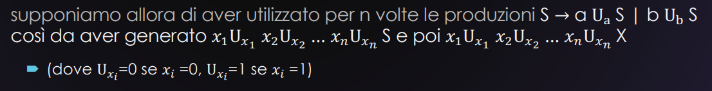
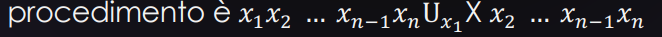
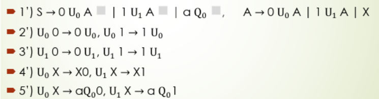
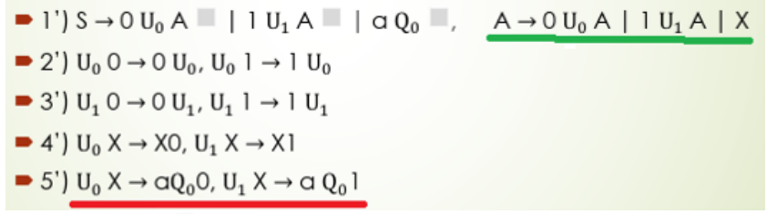
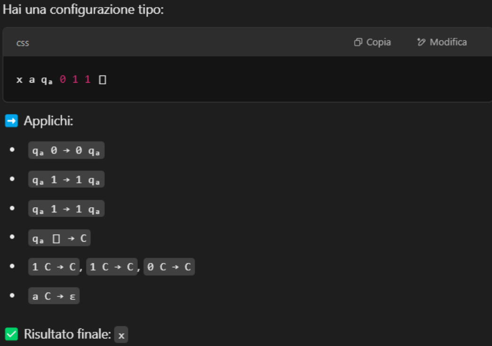
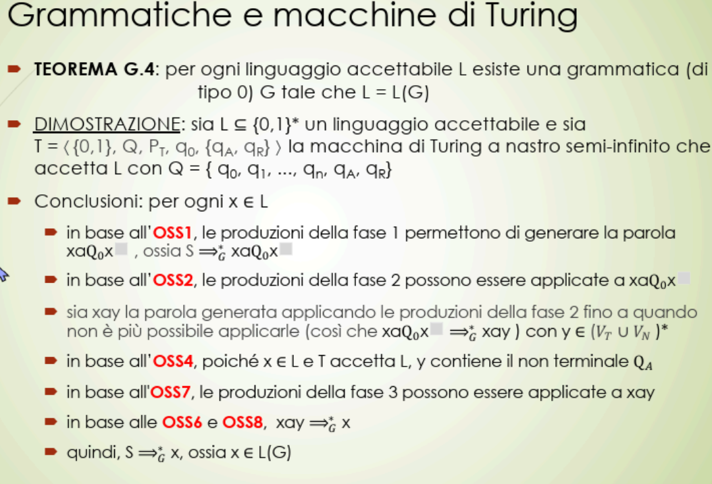
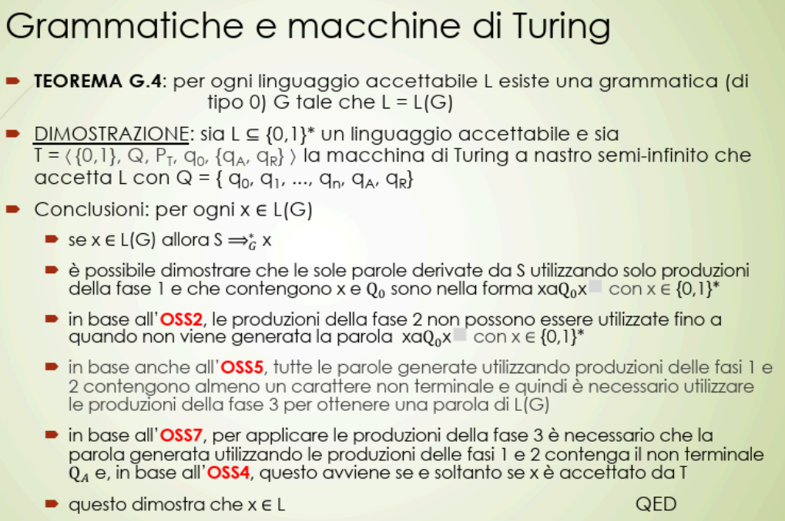

Noi vogliamo Dimostrare che la nostra Grammatica genera esattamente e soltanto il linguaggio L = ieri abbiamo dimostrato che oggi dimostriamo che per poi arrivare alla conclusione che
Inizio dimostrazione
iniziamo a precisare che non si può fare fin dall’inizio poiché finiremmo in una sorta di blocco
- non potremmo mai generare alcuna parola in
- non potremmo mai togliere il non terminale X
- non potremmo più aggiungere caratteri a o b a sinistra di X andiamo però a fare n produzioni di tipo  quello che poi possiamo fare è slidare le lettere dell’alfabeto oppure togliere la X,(puoi vederlo nella lezione scorsa) una volta fatti i vari swap ecc… appena arrivo alla sitauzione  Sull’ultimo devo utilizzare una tra le due produzioni
Grammatiche e macchine di Turing
Due definizioni importanti
GRAMMATICA
La grammatica è un modello di calcolo e descrivere come si possono generare le parole appartenenti a un insieme di parole
MACCHINA DI TURING
La Macchina di Turing è un modello di calcolo e una macchina di Turing descrive come si fa a riconoscere le parole appartenenti a un insieme di parole.
Vogliamo dimostrare che i due modelli di calcolo sono equivalenti
Ossia che
- se un linguaggio è accettato da una macchina di Turing allora esiste una grammatica (di tipo 0) che lo genera
- se un linguaggio è generato da una grammatica (di tipo 0) allora esiste una macchina di Turing che lo accetta.
NB: Il tipo non è troppo importante, ma se proprio devo sceglierlo la scelgo di tipo 0 dato che ho meno vincoli.
ciò da inizio al teorema G.4
Teorema G.4
Che vuole dimostrare che per ogni tipo di linguaggio accettabile L esiste una grammatica G tale che L=L(G) con G di tipo 0
Per dimostrare questo teorema ci serve un altro teorema
Il teorema burlone pasticcione dell’esercizio che non farò
Questo teorema ci dice che
- Se abbiamo una macchina riconoscitore T a un nastro
- con alfabeto {0,1}
- esiste una macchina di Turing T’ con un solo nastro semi-infinito e che non scrive mai il blank tale che, per ogni , quindi sostanzialmente abbiamo due macchine
- una con e una senza blank
- una con un solo nastro infinito e una con un nastro finito che ha un punto di inizio ma a destra è infinito
- essi avranno stesso output
Continuiamo con il teorema G.4
Definiamo una macchina di Turing che accetta L, definita con Dove:
- è l’alfabeto
- è l’insieme degli stati
- è il programma (insieme delle transizioni)
- le transizioni erano i passaggi di stato
- è lo stato iniziale
- sono gli stati finali (accetta/rifiuta)
➡ E assumiamo che:
- T abbia un solo nastro
- Il nastro sia semi-infinito (va solo a destra)
- T non scriva mai il blank
Definita la macchina di Turing procediamo a definire una grammatica G
dove rispettivamente abbiamo:
- = simboli terminali
- = simboli non terminali
- è l’assioma
- sono gli stati della macchina Turing
- , rappresentano 0 e 1 sotto forma “codificata”
- servono per “segnare” o “gestire” parti della configurazione del nastro
- = insieme delle produzioni (verrà descritto dopo)
Ora l’idea è quella di fare una simulazione del comportamento di T con la grammatica G
La simulazione avviene in 3 fasi precise
FASE 1
Cerchiamo di generare una parola formata da: dove - è l’input - è lo stato iniziale - è un marcatore/ancora che divide la parte “di sinistra” (simulazione) da quella “di destra”,
FASE 2
Andiamo a simulare la computazione di su
- la grammatica andrà ad applicare le sue produzioni per simulare le varie quintuple(o transizioni) di T
- una produzione=un passo della macchina di Turing
FASE 3
Se la simulazione termina in non ci serve sapere altro quindi togliamo tutto e lasciamo solo sul nastro
Fase 1 approfondita
(Ricordiamo che la macchina vuole ):
Riconoscere se una stringa è della forma xx, cioè due copie consecutive di una parola x.
Per generare quanto detto creiamo le seguenti produzioni

spiegazione delle produzioni passo per passo
1’) S → 0 U₀ A ◻ | 1 U₁ A ◻ | a Q₀ ◻
Questa regola serve per iniziare la costruzione della stringa:
S → 0 U₀ A ◻significa: se il primo simbolo è0, mettilo e attaccaU₀(un marcatore che ricorda che il simbolo era un0) e continua con A.
S → 1 U₁ A ◻simile ma per il1
S → a Q₀ ◻è il caso base: nessun simbolo da costruire → vado direttamente a simulare➡️ Serve a costruire l’inizio della configurazione: input + a Q₀ + copia + blank
2’) U₀ 0 → 0 U₀, U₀ 1 → 1 U₀
Sposta
U₀a destra attraverso i simboli, lasciandoli invariati.Serve a far scorrere
U₀fino a raggiungereX(che segna il punto in cui iniziare a copiare la seconda metà).
3’) U₁ 0 → 0 U₁, U₁ 1 → 1 U₁
Identico a 2’, ma per i simboli
U₁(che rappresentano una copia di1)➡️ U₀ e U₁ sono segnaposto per copiare, e scorrono verso destra finché non incontrano
X.
4’) U₀ X → X0, U₁ X → X1
Quando
U₀oU₁incontranoX, iniziano a scrivere il simbolo copiato a destra diX.
Es:
U₀ X → X 0→ vuol dire: “ho letto uno0, quindi lo scrivo accanto aX”Idem con
1
5’) U₀ X → a Q₀ 0, U₁ X → a Q₀ 1
Invece di lasciare
X, si inseriscea Q₀tra le due metà della stringa.Si sta “completando” la configurazione iniziale: la testina è sul primo simbolo della seconda metà, lo stato iniziale è
Q₀, e tutto a sinistra è la prima metà.➡️ Questo è il punto di transizione tra la generazione dell’input e la simulazione della macchina.
Fase 2 approfondita
Dopo la fase 1 abbiamo quindi una parola che pone un inizio per poi fare la simulazione vera e propria attraverso varie produzioni dove
- i primi 3 li abbiamo visti prima
- il secondo è la copia dell’input
- è il simbolo blank che serve esclusivamente per indicare la fine della parola scritta sul nastro con le produzioni lavoreremo solo con gli ultimi 3 Ora la grammatica G deve simulare le transizioni della macchina T attraverso le varie produzioni
Sostanzialmente con una macchina di Turing abbiamo principalmente 2 transizioni
Per effettuare scrittura e spostamento le produzioni sono le seguenti
Lo fa utilizzando produzioni del tipo
b qᵢ₁ h₁ → qᵢ₂ b h₂
(per la mossa a sinistra)
Oppure
qᵢ₁ h₁ b → qᵢ₂ h₂ b
(per la mossa a destra)
- q oltre a essere uno stato è anche una testina Come funzionano: Quello che abbiamo prima della produzione quindi prima della è la struttura della quintupla prima di effettuarla dove quindi avremo ad esempio:
bè un “placeholder” per qualsiasi simbolo che è nell’alfabeto come 0,1 o blankqᵢ₁è lo stato attuale prima della transizione, e indica dove si trova la testina (che è posizionata suh₁)h₁è il simbolo da dover leggere invece dopo la produzione avremmo:h₂è quello che ho scritto al posto dih₁bè sempre quello stesso simboloqᵢ₂è lo stato in cui siamo entrati ed è anche la testina (ad esempio CHE SI TROVA A SINISTRA DIbPERCHÉ CI SIAMO SPOSTATI ASX.) Possiamo fare due esempi uno per lo spostamento a sx e uno a dx
spostamento a sx
🟦 ESEMPIO 1: Spostamento a SINISTRA
Supponiamo di avere la quintupla:
⟨q₁, 1, 0, q₂, sx⟩Significa: “Se sono nello stato
q₁e leggo1, scrivo0, passo aq₂, e mi sposto a sinistra”.🧱 Configurazione PRIMA:
... b q₁ 1 ...Dove:
q₁è lo stato/testina sulla cella che contiene1
bè il simbolo a sinistra (può essere0,1o◻)🎯 Produzione corrispondente nella grammatica:
b q₁ 1 → q₂ b 0🧱 Configurazione DOPO:
... q₂ b 0 ...✅ La testina (
q₂) si è spostata a sinistra,1è stato sovrascritto con0, e l’ordine dei simboli cambia per riflettere la nuova posizione.
spostamento a dx
🟩 ESEMPIO 2: Spostamento a DESTRA
Supponiamo di avere la quintupla:
⟨q₁, 1, 0, q₂, dx⟩Significa: “Se sono nello stato
q₁e leggo1, scrivo0, passo aq₂, e mi sposto a destra”.🧱 Configurazione PRIMA:
... q₁ 1 b ...
q₁è la testina sulla cella con1
bè il simbolo a destra (qualunque simbolo del nastro)🎯 Produzione corrispondente nella grammatica:
q₁ 1 b → 0 q₂ b🧱 Configurazione DOPO:
... 0 q₂ b ...✅ La testina (
q₂) si è spostata a destra,1è stato sostituito con0, eq₂si trova ora sopra il simbolob.
🔁 Riepilogo Visuale
| Tipo spostamento | PRIMA | Produzione | DOPO |
|---|---|---|---|
| Sinistra | b q₁ 1 | b q₁ 1 → q₂ b 0 | q₂ b 0 |
| Destra | q₁ 1 b | q₁ 1 b → 0 q₂ b | 0 q₂ b |
Andiamo a creare delle definizioni per le varie m(mosse)
Mossa verso sx
Per una quintupla generica che va verso sinistra
<qᵢ₁, h₁, h₂, qᵢ₂, f>
avremo una generica produzione di questo tipo
Qᵢ₁ h₁ → Qᵢ₂ h₂
cosa succede se leggiamo blank dopo l'ultimo carattere a dx?
avremo sicuramente una quintupla di questo tipo
<qᵢ₁, ◻, h₂, qᵢ₂, sx>Dovremmo scrivere sul blank e aggiungere un nuovo blank a destra così da rispettare le prerogative del nastro quindi avremmo una produzione di questo tipo:b Qᵢ₁ ◻ → Qᵢ₂ b h₂ ◻
Mossa fermo
Per ogni quintupla <qᵢ₁, h₁, h₂, qᵢ₂, f> in
contiene le produzioni Qᵢ₁ h₁ → Qᵢ₂ h₂
semplicemente non ci andiamo a muovere tra i simboli
E se avessimo una quintupla del tipo
<qᵢ₁, ◻, h₂, qᵢ₂, f>?Avremo una produzione del tipo
Qᵢ₁ ◻ → Qᵢ₂ h₂ ◻
Mossa verso dx
Per ogni quintupla <qᵢ₁, h₁, h₂, qᵢ₂, ds> in
contiene le produzioni Qᵢ₁ h₁ → h₂ Qᵢ₂
E se avessimo una quintupla del tipo
<qᵢ₁, ◻, h₂, qᵢ₂, dx>?Avremo una produzione del tipo
Qᵢ₁ ◻ → h₂ Qᵢ₂ ◻
Alcune osservazioni importati
-
Le produzioni della fase 2 possono essere applicate solo a parole che contengono
Q₀
(cioè: solo dopo cheXè stato rimosso dalla parola iniziale generata nella fase 1) Se noti, guarda le varie produzioni  CON LA VERDE generoXCON LA ROSSA rimuovoXe hoQ₀ -
Ogni parola generata durante la fase 2 contiene uno e un solo simbolo
qᵢ, cioè uno stato Anche perchéqᵢrappresenta la testina e il nastro è unico → quindi ho una sola testina -
La struttura della parola
x a Q₀ x ◻Nel processo di generazione, la grammatica costruisce parole della forma:
x a Q₀ x ◻
Questa non è una parola qualsiasi, ma rappresenta una configurazione del nastro della macchina di Turing simulata dalla grammatica. Vediamo cosa significano i singoli simboli:
- Il primo
x(composto da simboli0e1) è l’input da confrontare: è una copia della stringa originale. - Il simbolo
aè un separatore usato solo per distinguere le due metà della configurazione. Q₀è un non terminale che rappresenta lo stato iniziale della macchina di Turing: si trova nella posizione della testina, sopra il primo simbolo della secondax.- La seconda
xè una copia dell’input, ed è la parte che la testina della macchina inizierà a leggere. - Il simbolo
◻(blank) indica la fine del nastro e serve alla grammatica per sapere dove finisce la computazione. La parte a destra del simboloa, cioè:
Q₀ x ◻
rappresenta lo stato globale della computazione della macchina di Turing su input x, ovvero:
-
il contenuto del nastro (la seconda
x), -
la posizione della testina (indicata dal punto in cui compare
Q₀), -
lo stato corrente della macchina (anch’esso rappresentato da
Q₀).
✅ Quando una parola è davvero generata?
Durante la simulazione della macchina di Turing, se la grammatica riesce ad arrivare a una configurazione in cui il non terminale q_A (lo stato di accettazione) si trova nella parola, allora la computazione è terminata con successo.
In altre parole:
Se, a un certo punto, la parola generata diventa
x a q_A,
significa che la macchina di Turing su inputxtermina nello stato di accettazioneq_A,
quindi la grammatica accettax, ovverox ∈ L(G).
-
Se la computazione T(x) non termina nello stato di accettazione
qₐ, allora qualsiasi parola generata durante la fase 2 contiene un non terminale appartenente all’insieme{qᵢ : i = 0, ..., k} ∪ {qᵣ}. In pratica, se non termino inqₐavrò sempre un carattere non terminale che può essere- uno stato attuale
qᵢ : i = 0, ..., k - lo stato di rigetto
qᵣ
- uno stato attuale
-
Andiamo ad avere una sorta di “protezione” avere ogni volta il blank Impedisce che vengano generate parole terminali se la simulazione non è andata a buon fine. Qualunque parola generata durante la fase 2 ha come ultimo carattere il blank
▯Questo perché ogni volta che la testina si sposta a destra, la grammatica aggiunge un nuovo▯alla fine.✅ Perché è utile?
- Serve per delimitare la fine del nastro simulato
- Permette alle produzioni della grammatica di sapere dove si trova il bordo destro, utile nelle riscritture
- Aiuta a identificare che la simulazione è ancora in corso o pronta a terminare
Fase 3 approfondita
avevamo detto che una volta finita la computazione dovevamo lasciare solo e pulire tutto il resto
- SE E SOLO SE ha terminato in
qₐ(e quindi se leggiamoqₐnella parola costruita nella FASE 1 e modificata nella FASE 2)- possiamo eliminare tutti i caratteri dopo
a - lasciare solo l’input
x
- possiamo eliminare tutti i caratteri dopo
quindi ad esempio prima di cancellare abbiamo
01 a q_A 01 ◻
dopo avremmo solo
01
Produzioni che ci consentono di pulire tutto
-
Per ogni
b ∈ {0,1}:qₐ b → b qₐfa slittareqₐa destra dei vari simboli (vogliamo portarla a sinistra del blank) a destra di bisogna immaginare che ci siano i blank -
Poi:
qₐ ▯ → Ctrasformo la coppiaqₐ ▯in un carattere specialeC -
Poi:
b C → C (per ogni b ∈ {0,1})Cavrà prima di sé tanti caratteri (∈ {0,1}) che verranno mano mano “eliminati” -
Infine:
a C → εDopo aver eliminato tutti i caratteri rimane soloaconC, che trasformo in una parola vuota (ε) e quindi le cancello definitivamente
ESEMPIO GRAFICO

Altre osservazioni
-
Le produzioni della fase 3 possono essere applicate solo se nella parola c’è
qₐ. anche perché se noti le prime due produzioni posso eseguirle SOLO SE hoqₐ -
Se applichi le produzioni della fase 3 a una parola che contiene solo
qₐcome non terminale e termina con▯, allora ottieni una parola composta solo dai simboli a sinistra dia, cioè proprio l’inputx.
Mega conclusione (e sintesi)
 